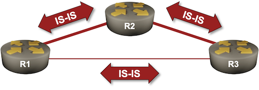

Optimize Simple IS-IS Deployments
In the Configure IS-IS Routing for IPv4 lab exercise, I told you to configure the routers as level-2 intermediate systems and promised a detailed explanation in a follow-up lab exercise. It’s time to open that can of worms.
To keep things simple, we’ll use a simple lab topology: three routers connected into a triangle.

Device Requirements
Use any device supported by the netlab IS-IS configuration module.
Starting the Lab
You can start the lab on your own lab infrastructure or in GitHub Codespaces (more details):
- Change directory to
basic/6-level-2 - Execute netlab up
- Log into lab devices with netlab connect
You’ll get a lab with IPv4 addresses and minimal IS-IS configurations on all devices.
Level-1 and Level-2 Routing in IS-IS
The link-state routing protocols (IS-IS and OSPF) were designed to run on devices that were two orders of magnitude1 slower than what we have today2 and had three orders of magnitude less memory3. The routing protocol designers were rightfully worried about scalability challenges and implemented features that would allow them to build large networks:
- OSPF uses areas connected via a backbone area.
- IS-IS uses areas (level-1 routing) connected via an overlay inter-area routing topology (level-2 routing).
Tip
In a follow-up lab exercise, we’ll discuss the details of multi-level routing. Today, we’ll focus on the implications of using single-area level-1 and level-2 routing on the same devices.
The IS-IS multi-level routing rules are simple:
- An area is a contiguous set of routers with NETs that differ only in system IDs (everything left of the system ID is the same)4.
- Level-1 (intra-area) routers know the topology of their area but not what’s in other areas.
- Level-2 (inter-area) routers know the inter-area topology but not the details of individual areas.
- Level-1-2 routers are like OSPF Area Border Routers. They know the topology of their area5 and the inter-area topology. They also summarize intra-area reachability information (prefixes and costs) and advertise them into the inter-area topology (similar to what OSPF ABRs do).
- Contrary to OSPF (where an interface belongs to a single area), IS-IS routers could establish level-1 and level-2 adjacencies over the same interface.
- Level-1 routing and level-2 routing are entirely separate. While they use a shared adjacency6, they use different topology databases.
Every router in an IS-IS network can be a level-1 router, a level-2 router, or a level-1-2 router. Furthermore, you could limit the adjacencies a router forms over individual interfaces (we’ll leave this topic for another day).
Now for the sad part: the default router type in most implementations is a level-1-2 router. Let’s assume we have a reasonably small network7 and don’t use areas (all routers are in the same area). Could the default setting hurt us?
Best Scenario: Duplicate Information
FRRouting is one of those implementations where running level-1 and level-2 routing in parallel causes only minor damage because it’s IS-IS implementation is incomplete (as of October 2024) and cannot distribute intra-area (level-1) information into inter-area (level-2) LSPs or vice versa8 as required by the IS-IS standards. Regardless, it’s worth exploring this behavior, as other devices might have similar defaults9.
If you start our lab with FRRouting nodes, you can observe level 3 adjacencies (that’s how FRRouting says “level-1-2”). The neighbor details confirm that the circuit type is L1L2; we’re running level-1 and level-2 routing with IS-IS neighbors.
IS-IS neighbor details on R1 running FRRouting
r1# show isis neighbor detail
Area Gandalf:
r2
Interface: eth1, Level: 3, State: Up, Expires in 28s
Adjacency flaps: 2, Last: 25s ago
Circuit type: L1L2, Speaks: IPv4
SNPA: 2020.2020.2020
Area Address(es):
49.0001
IPv4 Address(es):
10.1.0.2
r3
Interface: eth2, Level: 3, State: Up, Expires in 27s
Adjacency flaps: 2, Last: 25s ago
Circuit type: L1L2, Speaks: IPv4
SNPA: 2020.2020.2020
Area Address(es):
49.0001
IPv4 Address(es):
10.1.0.10
As expected, the routers have two IS-IS LSP databases with duplicate information (the LSPs might have the exact same size):
IS-IS LSP database on R1 running FRRouting
r1# show isis data
Area Gandalf:
IS-IS Level-1 link-state database:
LSP ID PduLen SeqNumber Chksum Holdtime ATT/P/OL
r1.00-00 * 112 0x00000002 0xcf99 1630 1/0/0
r2.00-00 112 0x00000002 0x0662 1638 1/0/0
r3.00-00 112 0x00000002 0x0e4d 1622 1/0/0
3 LSPs
IS-IS Level-2 link-state database:
LSP ID PduLen SeqNumber Chksum Holdtime ATT/P/OL
r1.00-00 * 112 0x00000002 0xc7a9 1642 0/0/0
r2.00-00 112 0x00000002 0xfd72 1622 0/0/0
r3.00-00 112 0x00000002 0x065d 1630 0/0/0
3 LSPs
Inspecting a level-1 LSP and a corresponding level-2 LSP confirms the duplication of information:
L1 and L2 LSP originated by R2 running FRRouting
r1# show isis database detail r2.00-00
Area Gandalf:
IS-IS Level-1 link-state database:
LSP ID PduLen SeqNumber Chksum Holdtime ATT/P/OL
r2.00-00 112 0x00000002 0x0662 1544 1/0/0
Protocols Supported: IPv4
Area Address: 49.0001
Hostname: r2
TE Router ID: 10.0.0.2
Router Capability: 10.0.0.2 , D:0, S:0
Extended Reachability: 0000.0000.0001.00 (Metric: 10)
Extended Reachability: 0000.0000.0003.00 (Metric: 10)
IPv4 Interface Address: 10.0.0.2
Extended IP Reachability: 10.0.0.2/32 (Metric: 10)
Extended IP Reachability: 10.1.0.0/30 (Metric: 10)
Extended IP Reachability: 10.1.0.4/30 (Metric: 10)
IS-IS Level-2 link-state database:
LSP ID PduLen SeqNumber Chksum Holdtime ATT/P/OL
r2.00-00 112 0x00000002 0xfd72 1528 0/0/0
Protocols Supported: IPv4
Area Address: 49.0001
Hostname: r2
TE Router ID: 10.0.0.2
Router Capability: 10.0.0.2 , D:0, S:0
Extended Reachability: 0000.0000.0001.00 (Metric: 10)
Extended Reachability: 0000.0000.0003.00 (Metric: 10)
IPv4 Interface Address: 10.0.0.2
Extended IP Reachability: 10.0.0.2/32 (Metric: 10)
Extended IP Reachability: 10.1.0.0/30 (Metric: 10)
Extended IP Reachability: 10.1.0.4/30 (Metric: 10)
End result: Even without information propagation between level-1 and level-2 routing, the routers consume twice as much memory for the IS-IS topology database. More importantly11, every change in the network triggers two SPF10 runs (one for level-1 topology, one for level-2 topology) with identical results (because every router advertises every prefix in level-1 and level-2 topologies). One of those results is thrown away; within an area, level-1 information takes precedence over level-2 information12.
Worst Case: Exploding Information
Most IS-IS implementations follow the rules from RFC 1195:
Level 2 routers include in their level 2 LSPs a complete list of [IP address, subnet mask, metric] specifying all IP addresses reachable in their area13.
Now, imagine you’re using an implementation that follows the RFC1195 rules in a single-area network where every router runs level-1 and level-2 routing. Every router advertises every reachable intra-area IP prefix in its level-2 LSP, resulting in humongous level-2 LSPs14.
All those level-2 prefixes would needlessly increase the overhead of level-2 SPFs (and the results of the level-2 SPF would be ignored anyway). Even worse, every change in the network topology that would change the cost of at least one prefix would result in changed level-2 LSPs that would be flooded across the whole network, triggering even more level-2 SPF runs.
Takeaway: In a single-area IS-IS network, never configure your routers as level-1-2 routers. Use level-1 routing or level-2 routing, but not both.
You can reproduce that behavior with most IS-IS implementations. Start the lab and explore the contents of a level-1 LSP and corresponding level-2 LSP. This is what you would get on Arista cEOS:
The L1 and L2 LSP advertised by R2 running Arista cEOS
r1>show isis database r2.00-00 detail
Legend:
H - hostname conflict
U - node unreachable
IS-IS Instance: Gandalf VRF: default
IS-IS Level 1 Link State Database
LSPID Seq Num Cksum Life Length IS Received LSPID Flags
r2.00-00 3 60631 1044 118 L2 0000.0000.0002.00-00 <>
Remaining lifetime received: 1199 s Modified to: 1200 s
NLPID: 0xCC(IPv4)
Hostname: r2
Area addresses: 49.0001
Interface address: 10.1.0.5
Interface address: 10.1.0.2
Interface address: 10.0.0.2
IS Neighbor : r1.00 Metric: 10
IS Neighbor : r3.00 Metric: 10
Reachability : 10.1.0.4/30 Metric: 10 Type: 1 Up
Reachability : 10.1.0.0/30 Metric: 10 Type: 1 Up
Reachability : 10.0.0.2/32 Metric: 10 Type: 1 Up
Router Capabilities: Router Id: 10.0.0.2 Flags: []
Area leader priority: 250 algorithm: 0
IS-IS Level 2 Link State Database
LSPID Seq Num Cksum Life Length IS Received LSPID Flags
r2.00-00 4 53131 1044 147 L2 0000.0000.0002.00-00 <>
Remaining lifetime received: 1199 s Modified to: 1200 s
NLPID: 0xCC(IPv4)
Hostname: r2
Area addresses: 49.0001
Interface address: 10.1.0.5
Interface address: 10.1.0.2
Interface address: 10.0.0.2
IS Neighbor : r1.00 Metric: 10
IS Neighbor : r3.00 Metric: 10
Reachability : 10.0.0.1/32 Metric: 20 Type: 1 Up
Reachability : 10.1.0.8/30 Metric: 20 Type: 1 Up
Reachability : 10.0.0.3/32 Metric: 20 Type: 1 Up
Reachability : 10.1.0.4/30 Metric: 10 Type: 1 Up
Reachability : 10.1.0.0/30 Metric: 10 Type: 1 Up
Reachability : 10.0.0.2/32 Metric: 10 Type: 1 Up
Router Capabilities: Router Id: 10.0.0.2 Flags: []
Area leader priority: 250 algorithm: 0
Configure IS-IS Router Type
By now, you probably agree that running level-1 routing and level-2 routing in parallel on all links of a single-area network15 does not make sense. Is it better to run just level-1 routing or just level-2 routing? I would go with level-2 routing; things will keep working even if you decide to split your network into smaller areas sometime in the future.
It’s time to get our hands dirty. After exploring the IS-IS database structures, configure all routers in your network to be level-2 routers with a router configuration command similar to is-type level-2.
Validation
Examine the IS-IS adjacencies on all links in your network. All IS-IS neighbors should have level-2 adjacency:
r1# sh isis neighbor
Area Gandalf:
System Id Interface L State Holdtime SNPA
r2 eth1 2 Up 30 2020.2020.2020
r3 eth2 2 Up 29 2020.2020.2020
The IS-IS database should not have any level-1 information:
r1# show isis database
Area Gandalf:
IS-IS Level-2 link-state database:
LSP ID PduLen SeqNumber Chksum Holdtime ATT/P/OL
r1.00-00 * 112 0x00000005 0xc1ac 1644 0/0/0
r2.00-00 112 0x00000006 0xf576 1713 0/0/0
r3.00-00 112 0x00000007 0xfb62 1701 0/0/0
3 LSPs
Reference Information
Lab Wiring
| Origin Device | Origin Port | Destination Device | Destination Port |
|---|---|---|---|
| r1 | eth1 | r2 | eth1 |
| r2 | eth2 | r3 | eth1 |
| r1 | eth2 | r3 | eth2 |
Lab Addressing
| Node/Interface | IPv4 Address | IPv6 Address | Description |
|---|---|---|---|
| r1 | 10.0.0.1/32 | Loopback | |
| eth1 | 10.1.0.1/30 | r1 -> r2 | |
| eth2 | 10.1.0.9/30 | r1 -> r3 | |
| r2 | 10.0.0.2/32 | Loopback | |
| eth1 | 10.1.0.2/30 | r2 -> r1 | |
| eth2 | 10.1.0.5/30 | r2 -> r3 | |
| r3 | 10.0.0.3/32 | Loopback | |
| eth1 | 10.1.0.6/30 | r3 -> r2 | |
| eth2 | 10.1.0.10/30 | r3 -> r1 |
-
The Cisco 2500 router had a 20 MHz CPU. Most general-purpose CPUs today use a clock frequency above 2 GHz (ignoring for the moment that they can also do much more in a single clock cycle). ↩
-
The Cisco 2500 router had up to 16 MB of memory. Most modern routers have at least 8 GB of (much faster) RAM. ↩
-
This is an over-simplified definition that ignores the IS-IS area merging functionality, where an IS-IS router with NETs from multiple areas joins those areas into a single L1 domain. ↩
-
Contrary to OSPF, an IS-IS router can belong to a single area (ignoring the overlapping areas exception). ↩
-
That shared adjacency is advertised as two adjacencies (extended reachability TLV), one in level-1 LSP and another in level-2 LSP. ↩
-
ISPs were running networks with hundreds of routers in an IS-IS area in the 1990s. Most everyone agrees that (assuming you’re using a decent implementation) it’s OK to run a few hundred routers (I’ve also heard “less than a thousand routers”) in a relatively stable IS-IS area (TLDR: It Depends™️) ↩
-
Let’s be polite: I would not invest my time in figuring out how to use FRRouting as a level-1-2 router in a network that uses multi-level IS-IS routing. ↩
-
Cisco Nexus OS does not distribute level-1 information into level-2 LSPs unless you configure distribute level-1 into level-2 within an IS-IS router address family. ↩
-
Shortest-Path First; the algorithm used to find the lowest-cost paths in a weighted graph ↩
-
In the world of cheap RAM ↩
-
See section 3.2 of RFC 5302 for more details. ↩
-
RFC 5302 provides a slightly stricter interpretation in section 3.3: a L1L2 router SHOULD only advertise in their L2 LSP those L1 routes that they use for forwarding themselves. They SHOULD NOT
unconditionally advertise into L2 all prefixes from LSPs in the L1 database. ↩ -
OSPF would do the same thing if you configured virtual backbone links across a single-area OSPF network ↩
-
In a network with multiple areas using multi-level IS-IS routing, you might have to run level-1 routing and level-2 routing on some core links (but you wouldn’t do that on each link). ↩